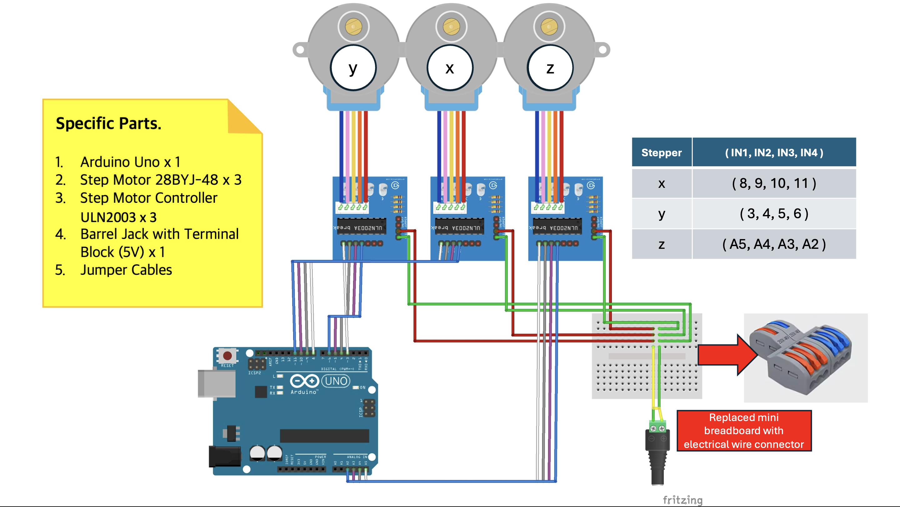
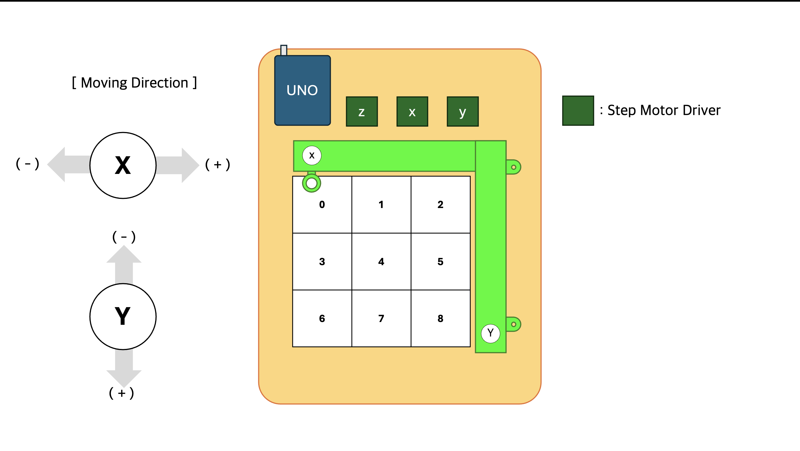

[TicTacToe/01] CNC Plotter 제작
로봇 선정 : CNC Plotter
인간과 현실에서 상호 작용해 게임을 플레이하는 로봇을 구현하고자 했다. 틱택토는 3 x 3 평면에서 진행되는 단순한 게임으로, 그림을 그리는 로봇이나 물체를 옮기는 로봇으로 구현할 수 있다. 그림을 그려주는 로봇은 게임이 시작되는데 필요한 3 x 3 규격을 그리는 것부터 수를 두는 것까지 게임의 전과정을 제어할 수 있음으로 물체를 옮기는 로봇보다 유리하다 판단했다. 그림을 그리는 로봇으로는 CNC Plotter(Computer Numeric Control Plotter)을 선정했다.
CNC Plotter에 대하여
CNC Plotter는 펜 뿐만 아니라 커터나, 레이저와 같은 도구를 이용해 2D 이미지, 도면, 구조물을 제작하는 로봇을 통칭한다. ‘그림’을 그리는 로봇이 필요하다면 펜을, ‘전개도를 자르는’ 로봇이 필요하다면 커터를 들려주면 된다. 나의 경우, 펜을 쥐어 주었다.
CNC Plotter의 움직임
CNC Plotter는 모터를 통해 x,y,z 축을 제어한다. 그중 x,y 축은 2D 평면에 원하는 위치로 이동할 때 사용되고, z축은 펜과 같은 도구를 제어하는데 사용된다.
레퍼런스와 부품
- 레퍼런스
틱택토는 플레이를 위해 큰 공간을 필요로 하지 않기 때문에 소형 CNC Plotter을 선정했다.
- 로봇 부품
| 부품명 | 개수 |
|---|---|
| Arduino UNO | 1 |
| Step Motor 28BYJ-48 | 3 |
| Step Motor Controller ULN2003 | 3 |
| Barrel Jack with Terminal Block(5V) | 1 |
| Jumper Wires (F/M, M/M) | n |
| electrical wire connector | 1 |
| 3D Printed Body | 1 |
- 기타 준비물
| 품목명 | 개수 |
|---|---|
| 5V Adapter | 1 |
| Super Glue | 1 |
| 2M Bolts with large head | 6 + 2 + 1 |
| Pen | 1 |
| Chopping Board | 1 |

제작 과정
- 위 영상을 참고해 제작했고, 베어링 부분은 추가하지 않았다.
- 출력면이 매끄럽지 않아 걸리는 부분들을 사포로 전부 갈아주었다. 실제로 테스트를 해보았을 때, 그냥 손으로 밀리는 수준이 되어야 스텝 모터의 힘만으로 기계를 움직일 수 있었다.
회로도와 구조도
- 회로

구현 초기에는 전류 연결을 미니 브레드 보드로 진행했으나, 원활한 전류 공급이 이루어지지 않아 스텝 모터가 랜덤으로 진동하며 움직이지 않는 오류가 발생했다. 전류 커넥터를 도입해 스텝 모터의 진동 문제를 해결했다.
-> 레퍼런스 : 28BYJ-48 stepper is only vibrating
- 구조

- 실제 이미지